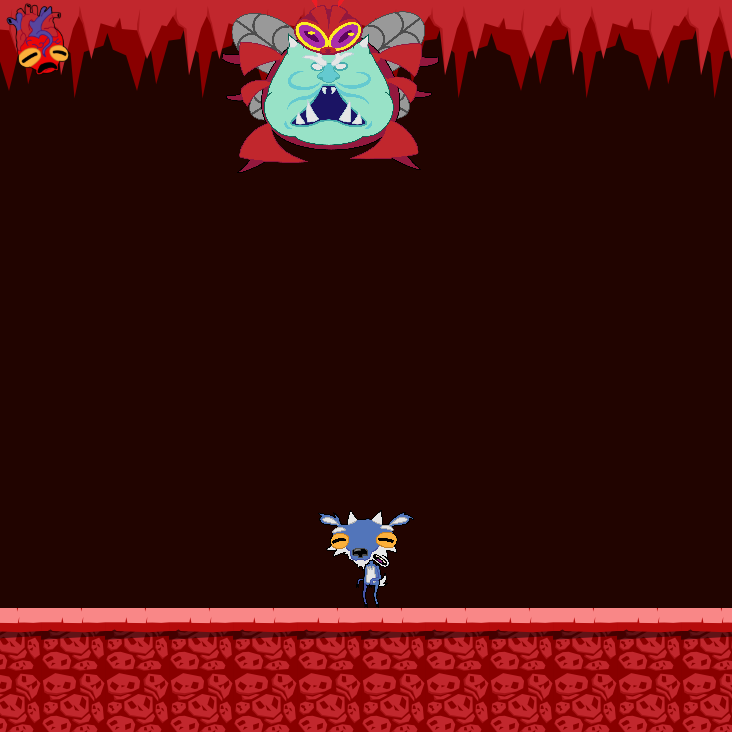

Projeto Integrador
Este webgame é o meu projeto integrador. Como todo trabalho que desenvolvemos no curso ele tem início, meio e fim. Passamos por várias etapas e aprendemos vários conhecimentos, não só nessa qualificação, mas todas as outras fazem parte do processo para chegarmos até aqui.
Escape Goat

Para acessar o jogo e poder jogar bastante clique no link abaixo:
Acesse o jogo com este link: Escape Goat
História - Escape Goat
Um bode vive em uma fazendinha. À noite, ele vai dormir no meio do pasto, até que de repente algumas figuras usando mantos o sequestram e colocam ele numa van. Sem lembrar o que aconteceu, ele acorda em uma gaiola. Ele escapa dando cabeçadas na porta. Porém o barulho alertou culto. Durante a fulga ele escuta alguns membros. O grupo planeja sacrificar bodes para poder invocar uma entidade. Agora é fugir e lutar.
Salva o Mundo
Nesse jogo você vai aprender onde descartar cada tipo de resíduo na lixeira correta durante o caminho para salvar a Terra.


Para acessar o jogo e jogar clique no link abaixo:
Acesse o jogo com este link: Salva o Mundo